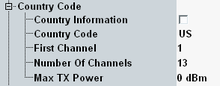

Country Code Settings
These parameters define information transported to the DUT via the "Country" element. The information allows the station to identify the regulatory domain in which it is located.

Country code settings
Enables or disables the transport of the information.
Remote command:Identifies the country or non-country entity in which the AP is operating. The non-country code is "XX". The country codes are defined in ISO/IEC 3166-1.
Remote command:Define the allowed range of channels to be used.
Remote command:Defines the maximum allowed transmit power in dBm.
Remote command: